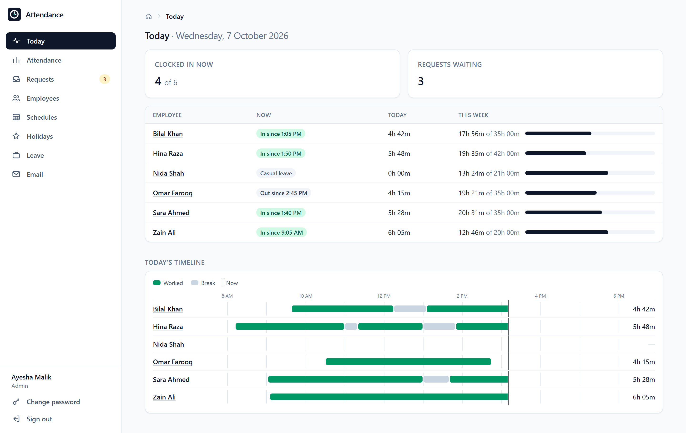
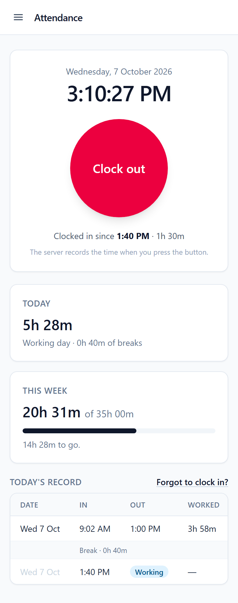
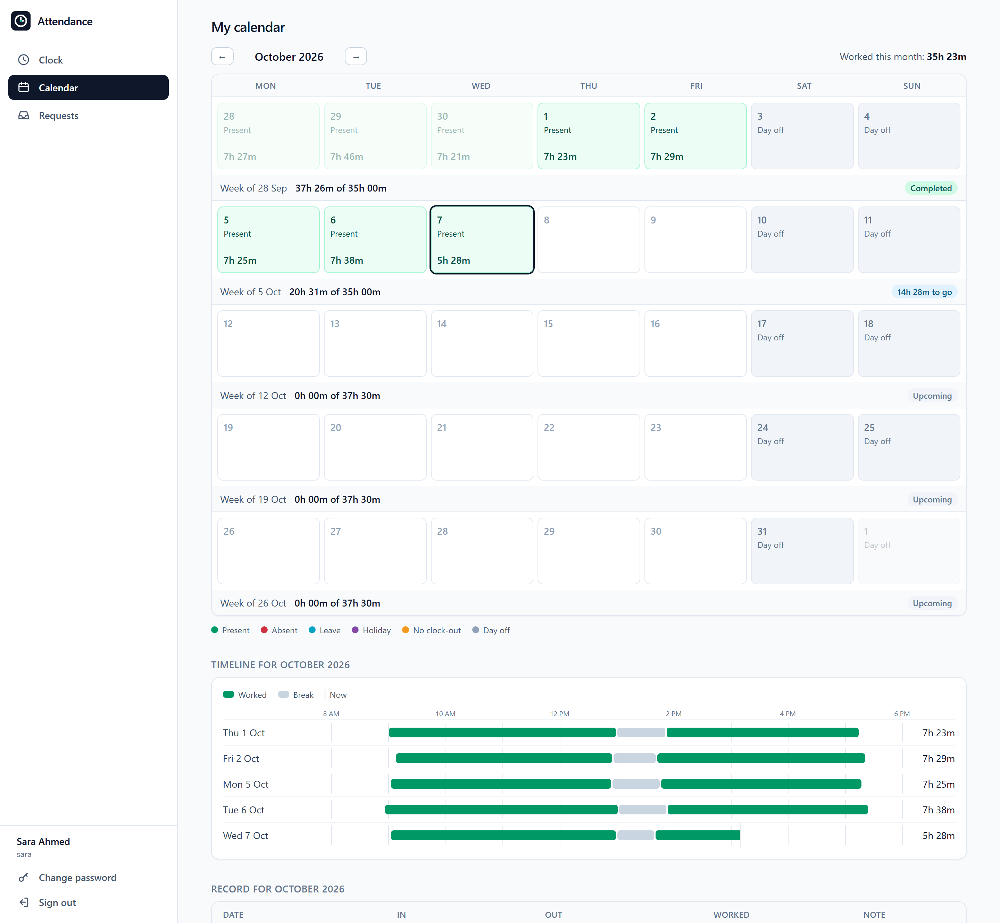
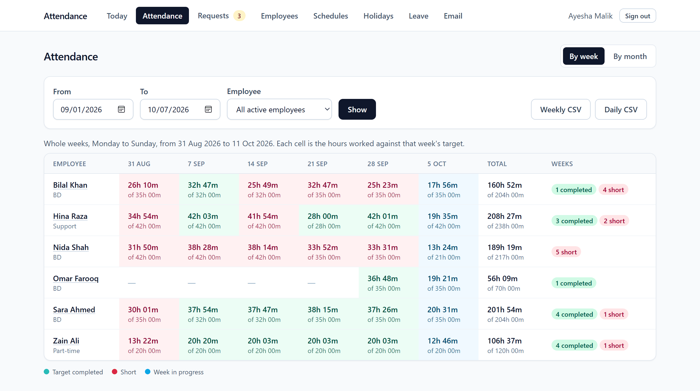
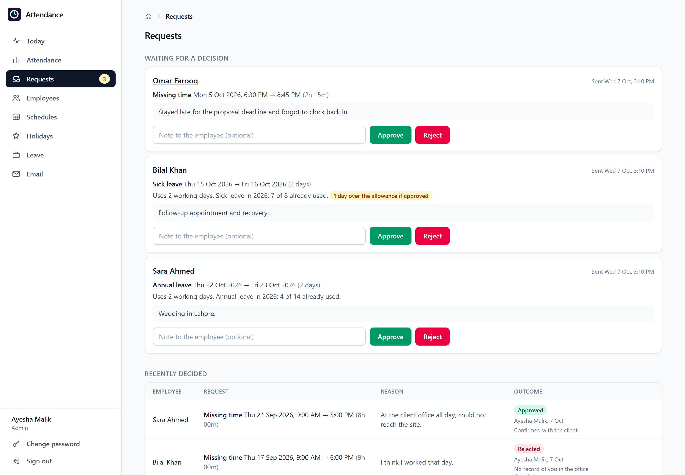
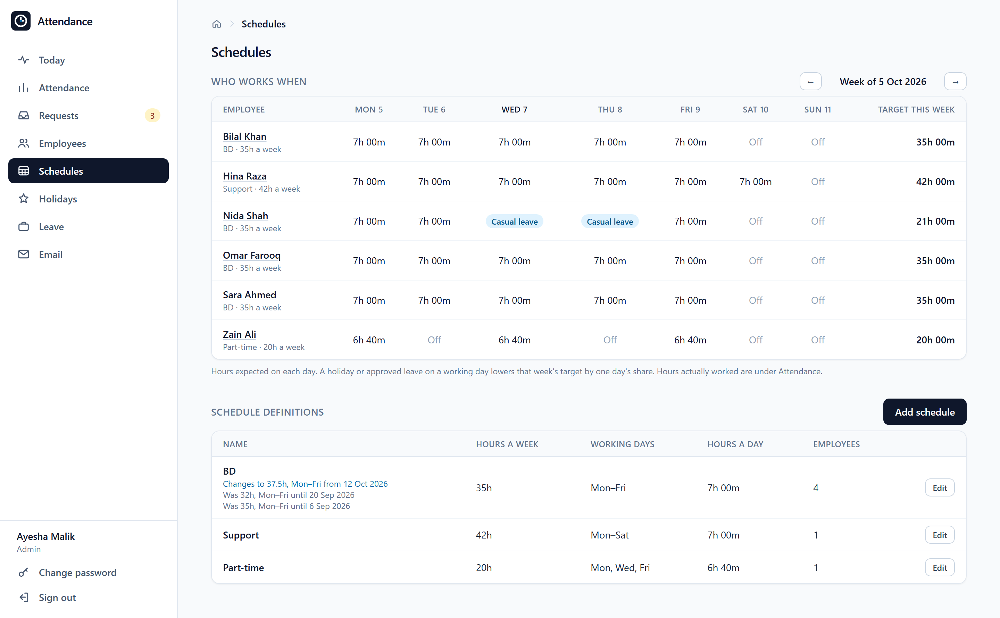
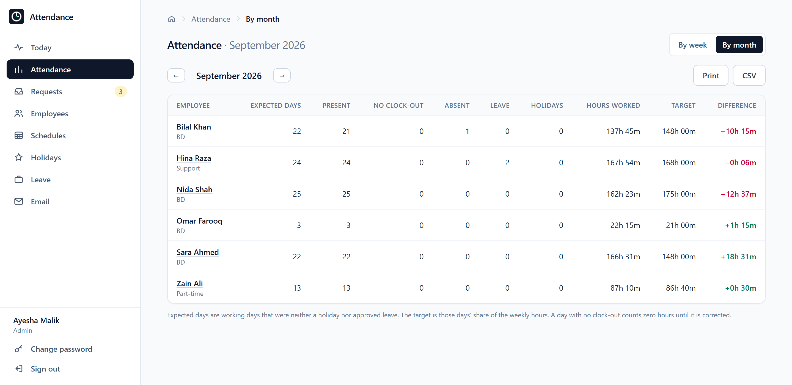

Open source · Self-hosted
Attendance, without the HR suite.
Employees press one button. The server records the time. You get a clear record of who worked when, and whether the agreed hours were done.
MIT licensed. One container, on SQLite or PostgreSQL.


One button
Clock in, clock out. Nobody types a time, so the record means the same thing for everyone.
Hours against a target
Each schedule has weekly hours. Every week shows what was worked, what was expected, and the difference.
Requests, not edits
A missed punch becomes a request with a reason. Nothing changes until the admin approves, and it stays marked as manual.
For employees
Press the button. See where you stand.
The first page is the clock. Everything else is there to answer one question: have I done my hours?
- Today's hours and the week's progress against the target, updating live.
- A month calendar: present, absent, leave, holiday, day off or a missing clock-out.
- A timeline of each day, with breaks shown between sessions.
- Requests for missing time and for leave, with the leave balance left for the year.
- Add it to a phone's home screen and it opens like an app.


For the admin
The whole team's record, without the paperwork.
Review any week or month, decide requests, and set the rules: schedules, holidays and leave. Admins are owners, so they never clock in themselves.


Attendance by week
Hours against target for any range. Green met it, red fell short, blue is still running. Exports to CSV.


Requests
Missing time and leave in one inbox. Leave that would go over the yearly allowance is flagged, not blocked.


Schedules
Who is expected when, including days off, holidays and leave. Changes apply from a chosen week onward.


Monthly summary
Days and hours per employee, ready to print or export for payroll.
Corrections with a trail
Add, correct or remove an entry with a reason. The old values stay in a history the employee can see.
Holidays
An editable list that starts with Pakistan's public holidays. Eid dates are estimated and marked tentative until confirmed.
Leave allowance
Days per leave type per year, and everyone's balance at a glance.
Email notices
Over your own SMTP server, with a test button that explains what went wrong when sending fails.
Sign-in lockout
Five wrong passwords lock a username for fifteen minutes.
Your server, your data
Nothing leaves the machine you run it on. Back it up by copying one file.
How it is built
A few decisions shape the whole thing.
The server owns the clock
The button sends only "in" or "out". The time is taken on the server, so a wrong or altered device clock changes nothing, and a double tap cannot clock someone in and straight back out.
One calculation, many views
Every calendar cell, weekly total, monthly summary and export comes from the same function. Nothing derived is stored, so the views cannot disagree.
The past is not rewritten
Schedules are kept as dated versions. Raising a target from next week leaves earlier weeks judged by what applied at the time.
The database says no
A partial unique index allows one open entry per employee, and check constraints keep a clock-out after its clock-in.
Nothing to babysit
A forgotten clock-out is flagged the next time anyone opens the app. No scheduler has to be running for the record to be right.
Tested on both databases
The test suite runs on SQLite and PostgreSQL on every push, and the Docker image is built and started as part of the same check.
- Django 5.2
- Python 3.10+
- Tailwind CSS 4, compiled
- SQLite or PostgreSQL
- Docker
- Under 100 lines of JavaScript
Run it
Up in two commands.
Copy the example settings, fill in a secret key and an admin password, and start the container. The first start creates the database and your admin account.
With Docker
git clone https://github.com/Blankscreen-exe/attendance-tool.git
cd attendance-tool
cp .env.example .env # then edit it
docker compose up -d --buildOr straight from Python
pip install -r requirements.txt
python manage.py migrate
python manage.py createsuperuser
python manage.py runserver